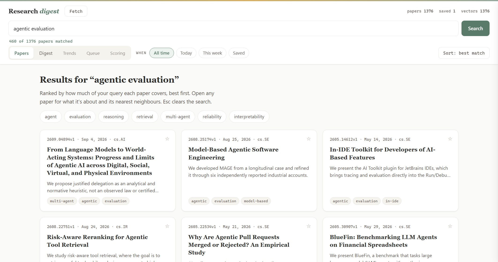
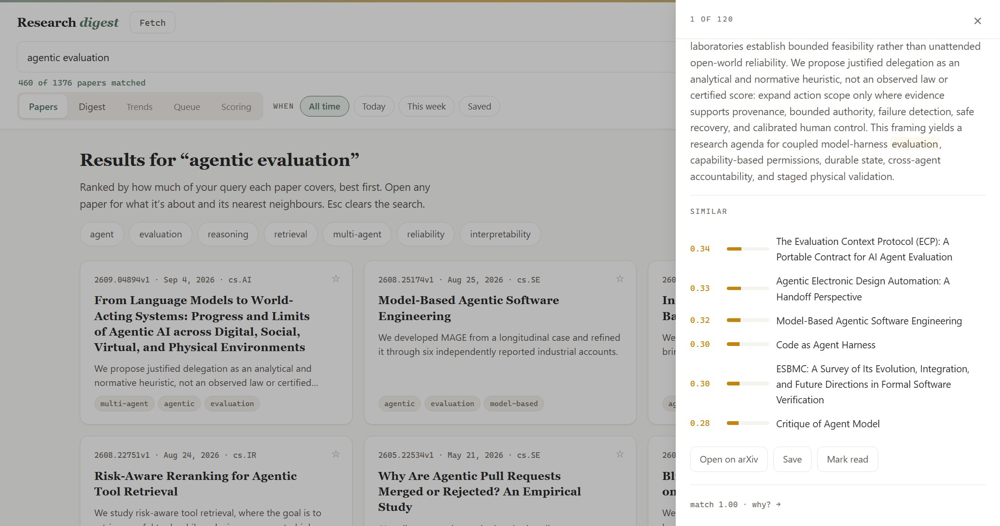
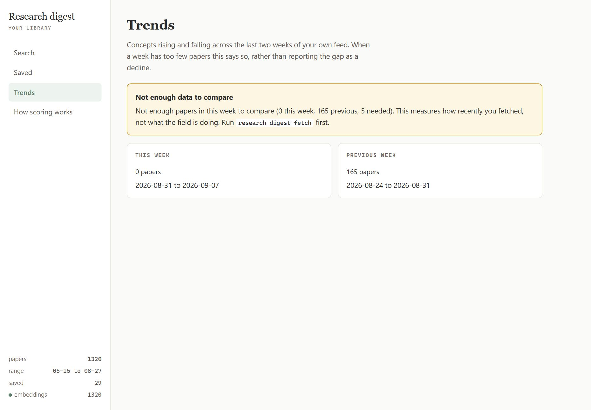

Hover or tab to a stage for detail.
Why MCP instead of a REST API
REST APIs serve apps. MCP serves agents.
The library already has a browser interface. The reason to also speak MCP is that it removes a context switch. You are in Claude Code working on something, you want to know what you have read about evaluation harnesses, and you ask. The agent calls search_papers behind the scenes and answers from your shelf.
Without it you stop, open a tab, search, skim, and come back having lost your place. That is the whole pitch.
Claude Code takes one command:
$ claude mcp add research-digest -- research-digest mcp
Codex reads ~/.codex/config.toml:
[mcp_servers.research-digest] command = "research-digest" args = ["mcp"]
Copilot CLI reads ~/.copilot/mcp-config.json:
{
"mcpServers": {
"research-digest": {
"command": "research-digest",
"args": ["mcp"],
"tools": ["*"]
}
}
}
Any other MCP client takes the same two fields: run research-digest with the argument mcp.
Then you talk to it in normal language:
Those map to the eight tools: search_papers, get_similar, get_saved, suggest_reading, save_paper, get_digest, get_trends and library_status. The server is plain JSON-RPC over stdin and stdout, no SDK, so you can drive it from a shell when something looks wrong:
$ echo '{"jsonrpc":"2.0","id":1,"method":"tools/list"}' | research-digest mcp
What it looks like

0.580 matched agent (distinctive word)… +0.16 for being 6 days old. That is the derivation of a number standing in for the thing a reader needs. It is still one click away, and still exact.
match 1.00 · why?, and it is the score the list you arrived from actually ranked by. It used to quietly show a different one.
-100% across the board, which was measuring my uptime, not the field.Why every result explains itself
The ranking is arithmetic, so it can be read back. Every paper carries the topics it matched, how each one matched, and the two bonuses that moved it. One function turns that record into a sentence:
>>> explain_sentence(why) matched retrieval (distinctive word), agent (distinctive word), tool use (phrase); +0.30 for spanning 3 topics; +0.18 for being 3 days old.
The point is not the line in the browser. The same string goes out through MCP, so when the agent answers "what do I have on retrieval" it can also say why those and not the others.
A ranking you cannot interrogate is one you end up either trusting or ignoring, and neither is much use when you are deciding what to read. In the interface itself that arithmetic is one click away behind a why? link, not the first thing you see — the first thing you see is a plain sentence about the paper.
The case worth printing is the one where nothing matched. Then it says No topic matched. It ranks on recency alone. A score on its own reads as a judgement about the paper. That sentence is the difference between a weak match and no match at all, and the number will not tell you which one you are looking at.
Whether any of it works
“Explainable keyword scoring is good enough for a personal library” is a claim, and claims want measuring. Two evals, deliberately built to fail in opposite directions.
The first mines 26 queries out of the library itself — any two-to-four word phrase appearing verbatim in 3 to 40 papers — and takes “contains the exact phrase” as ground truth. No judgement, no model, fixed seed, so it reproduces exactly. The second asks eight real questions, pools the top five from three rankers, strips every trace of which ranker produced what, and judges all 115 papers blind on a 0–3 scale against their full abstracts.
| Ranker | 26 mined phrases precision@5 | 8 judged queries precision@5 |
|---|---|---|
| This ranker | 0.708 | 0.80 |
| Sort by date | 0.008 | 0.23 |
| Random | 0.000 | 0.12 |
The measurement caught a regression I had already shipped. The judged eval found one query, chain of thought faithfulness, scoring zero — because “of” was not on the list of words that count for less, so it scored as a distinctive word and matched nearly every paper. I added a stopword list and shipped it.
Nobody checked it against the other eval. It cost 0.708 → 0.531. Filtering ran before the exact-phrase bonus was assembled, so “chain of thought” became the phrase “chain thought”, which appears in no paper, and every query with a function word inside it silently lost the bonus. All 11 affected phrases fell; none of the other 15 moved. Building the phrase from the raw query restores 0.708 with the stopword fix kept.
A fix motivated by one eval and never checked against the other is a coin flip, and this one landed wrong, in a build with a green test suite — because the tests encoded the bug that motivated the fix, and nothing encoded its cost.
The most useful result is the query that still scores zero. Of 1,376 papers, ten mention chain-of-thought and eighteen mention faithfulness; zero mention both. The one paper the judge rated relevant across the entire pool shares not a single word with the query — not “chain”, not “thought”, not “faithful”. A string matcher cannot reach it, which is exactly the failure this approach is supposed to have. Worth adding: the embedding store already built over this library does not reach it either, so “just use embeddings” is a hypothesis here, not an answer.
What none of this proves, stated plainly because it is the first thing I would ask: exact-phrase ground truth rewards a string matcher by construction, eight queries is not a benchmark, the judged numbers are one model’s opinion rendered once, and there is no held-out set — every figure above comes from the data that motivated the fixes. The full write-up leads with that list, and ships the harness and all 115 judgments so the numbers are checkable rather than quotable.
Why a side panel and not a modal
A modal says stop what you are doing and look at this. A side panel says here is more detail, your list is still where you left it. When you are working through hundreds of results, that difference is the whole browsing experience.
So the paper detail is a 460px drawer: open one, read what it's about, check its nearest neighbours, close it, and you are still on the same row. It is the pattern from Figma, VS Code and Linear, and the reason it works is that the primary view never goes away.
/* 460px drawer, bottom sheet on a phone */ .detail-panel { position: fixed; right: 0; top: 0; height: 100vh; width: min(460px, 92vw); transform: translateX(100%); } .detail-panel.open { transform: translateX(0); } @media (max-width: 720px) { .detail-panel { width: 100%; height: 78vh; bottom: 0; top: auto; transform: translateY(100%); } .detail-panel.open { transform: translateY(0); } }
Below 720px it becomes a bottom sheet instead, because a 460px drawer on a phone is a modal wearing a costume. The transition is inside a prefers-reduced-motion query, so if you have asked your system not to animate things, it simply appears.
Why TF-IDF instead of transformer embeddings
Both give you vectors for cosine similarity. TF-IDF plus SVD wins on three practical points for a personal tool: nothing to download, so no 90 MB model fetch; works offline, including on a corporate network that blocks model registries; and no GPU, so it behaves the same on any machine with Python.
The tradeoff is real. TF-IDF matches vocabulary, not meaning, so "reinforcement learning" and "reward optimisation" will not find each other. For a daily feed where papers in a field share vocabulary, that is usually fine. If you want the semantic version, install sentence-transformers and pass --engine minilm (about 90 MB, downloaded once).
One thing worth knowing if you use it: TF-IDF is fitted to your corpus, so adding papers changes the vector space. research-digest embed therefore rebuilds the whole index rather than appending, and the store records which fit produced each row. If it ever finds two, it refuses to compare them and tells you to re-embed instead of quietly returning nonsense.
Getting it running
$ git clone https://github.com/dneish2/research-digest-mcp $ cd research-digest-mcp $ pip install -e . # pull today's papers, then check what you have $ research-digest fetch Fetched 56, 56 new. Library now holds 56 papers. $ research-digest status # already have a library elsewhere? load it in one shot $ research-digest import ~/old-library/archive.json # optional: similarity search needs numpy and scikit-learn $ pip install -e ".[embeddings]" $ research-digest embed # browse it, or wire it to your agent $ research-digest web $ claude mcp add research-digest -- research-digest mcp
fetch is safe to run daily and only adds papers you have not seen — put it on a cron job or a scheduled task if you want it to run itself. Everything lives in ~/.research-digest, or wherever you point RESEARCH_DIGEST_HOME. There is no account and no API key. No lockfile either; any installer works, including uv if that's what you reach for.
Pick the categories and topics you care about:
$ research-digest config --add-category cs.CV $ research-digest config --add-topic "world model"
What it does not do
It reads arXiv, not Semantic Scholar or your PDF folder. It does not summarise papers for you with a model, because the agent you connected it to already does that better and you can ask it to — what it does instead is extract the sentence the abstract already uses to state its own contribution, which needs no model at all. And the similarity is vocabulary-based by default, so it is a good way to find the neighbours of a paper and a poor way to find the paper you cannot remember the words for.
What it is good at is the thing it was built for: you have read a few hundred papers, you half-remember one, and you would like the assistant you are already talking to be able to go and get it.